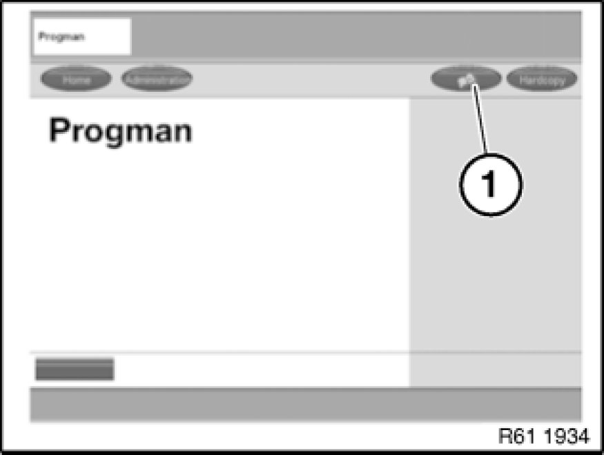

Programming and Relearning
Vehicle programming and coding

Select menu item (1).
Select corresponding procedure from selection list.
Example:
- Preparation and subsequent evaluation of vehicle programming
- Start a Progman session
- Sequence of BMW/MINI vehicle programming and coding
- BMW/MINI Car & Key Memory
- BMW/MINI initializations
- BMW/MINI service functions in Progman
- ...

Note:
In order to avoid incorrect programming procedures and error messages, it is essential when working with the Progman programming system always to use the latest Progman version.